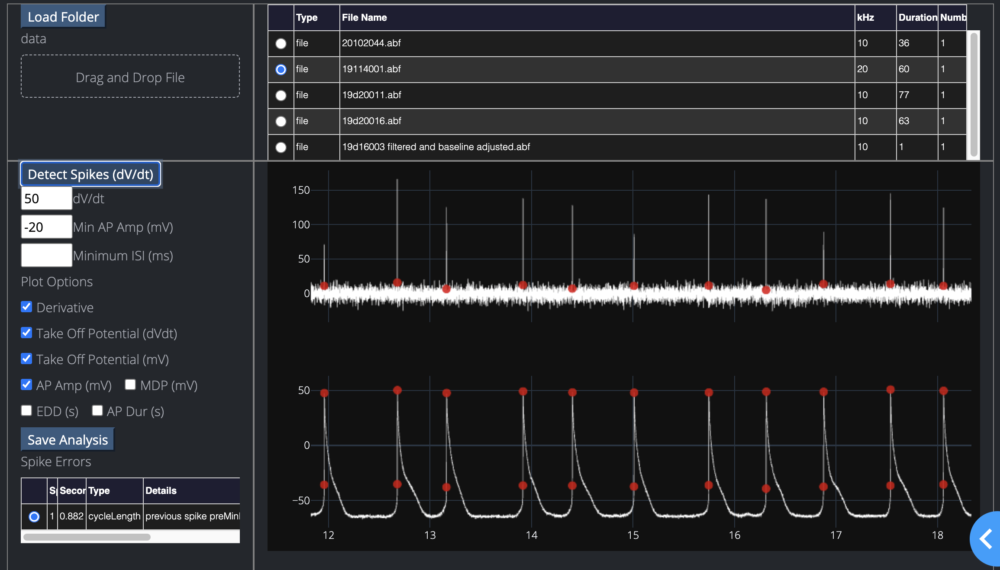

Web Application
Please note, this is experimental and under active development.¤
The browser based web application uses the same backend code as the desktop interface. The web interface itself is a seperate set of code. We will move more and more interface to the web version, for now it is sufficient to browse, analyse, and save results.
Local files can also be dragged and dropped to the web interface.

Once data is analyzed, Pooling allows browsing detection parameters across any number of files.

Install the web application¤
Please note, this is experimental and does not have all functions implemented. Please use the desktop version instead.
cd SanPy/dash
python3 -m venv sanpy_dash
source sanpy_dash/bin/activate
pip install -r requirements.txt
# install sanpy from local copy of repository
pip install -e ../.
Running the web applications¤
Run the web application to analyze raw data
cd SanPy/dash
source sanpy_dash/bin/activate
python dash_app.py
The web application for analysis is available at
http://localhost:8000
Run the web application to browse and pool saved analysis
cd SanPy/dash
python bBrowser_app.py
The web application for browsing and pooling saved analysis is available at
http://localhost:8050